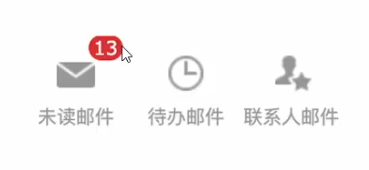
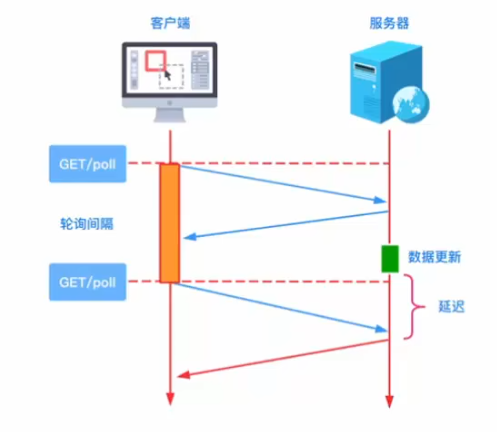
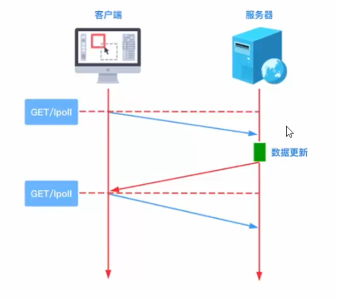
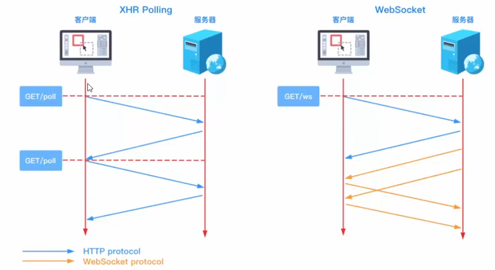
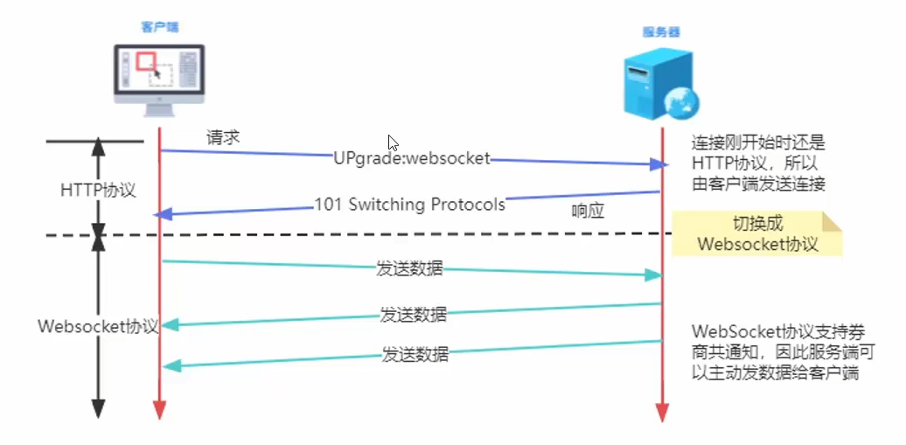
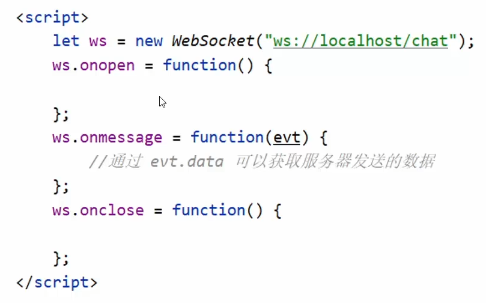
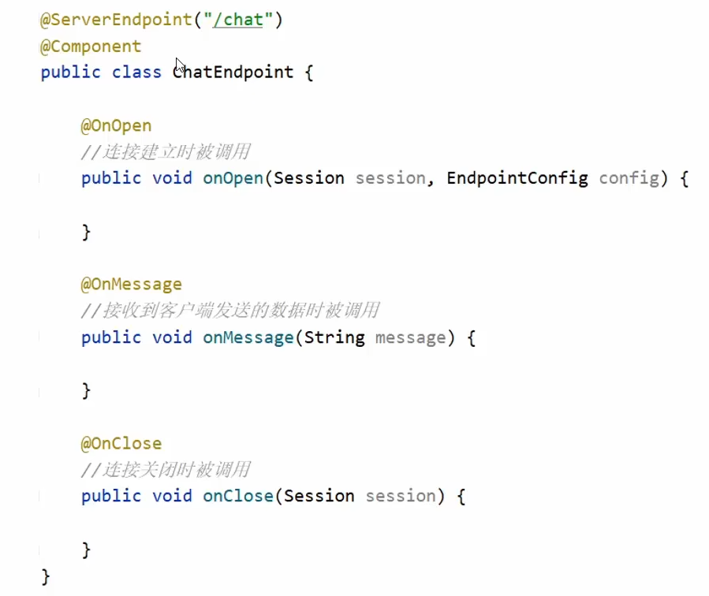
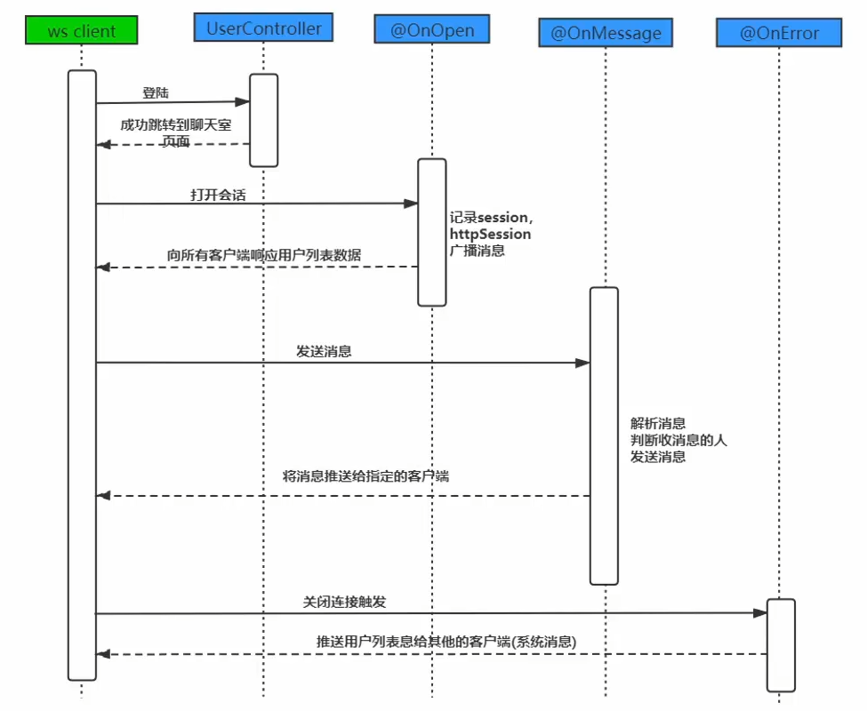
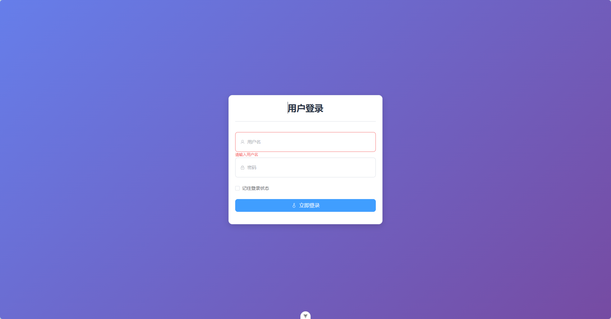
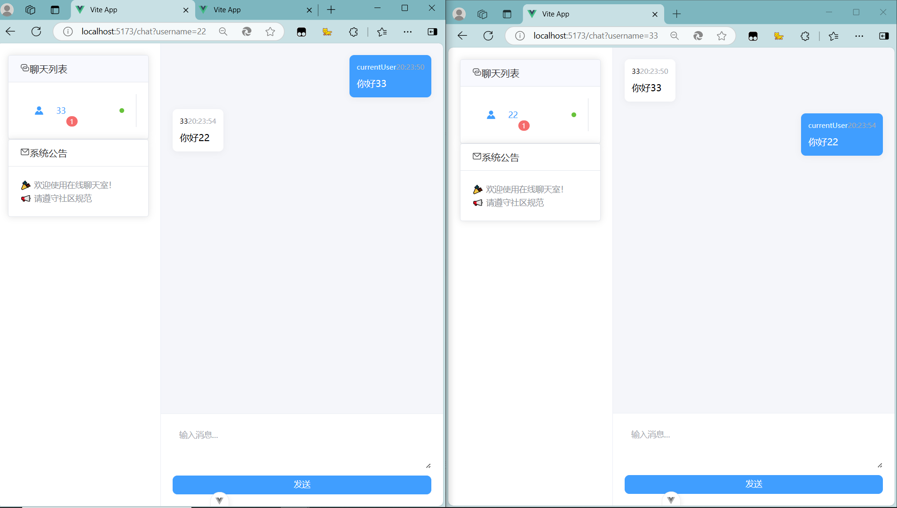

WebSocket聊天室项目
认识WebSocket
消息常见推送方式
问题引入

轮询
浏览器以指定的时间间隔向服务器发送HTTP请求，服务器试试返回数据给浏览器

长轮询
浏览器发出ajax请求，服务器接收到请求后，会阻塞请求直到有数据或超时才返回

SSE（server-sent event）
服务器发送事件
WebSocket
一种基于TCP连接上进行全双工通信的协议
全双工：允许数据在两个方向同时传输
半双工：允许数据在两个方向上传输，但是同一个时间段内只允许一个方向上传输

原理解析

WebSocket API
客户端【浏览器】API
1
| let ws = new WebSocket(URL);
|
URL: ws://ip地址/访问路径
| 事件 |
事件处理程序 |
描述 |
open |
ws.onopen |
连接建立时触发 |
message |
ws.onmessage |
客户端接收到服务器发送的数据时触发 |
close |
ws.onclose |
连接关闭时触发 |

服务端 API
Tomcat从7.0.5版本起支持WebSocket并实现Java WebSocket规范。
Java WebSocket应用由一系列Endpoint组成，Endpoint是代表WebSocket链接一端的java对象，服务端可视为处理WebSocket消息的接口。
定义Endpoint有编程式和注解式两种方式：
Endpoint实例在WebSocket握手时创建，并在客户端与服务端链接过程中有效，最后在链接关闭时结束。在Endpoint接口中明确定义了与其生命周期相关的方法，规范实现者确保生命周期的各个阶段调用实例的相关方法。生命周期方法如下：
| 方法 |
描述 |
注解 |
onOpen() |
当开启一个新的会话时调用，该方法是客户端与服务端握手成功后调用的方法 |
@OnOpen |
onClose() |
当会话关闭时调用 |
@OnClose |
onError() |
当连接过程异常时调用 |
@OnError |
服务端数据接收方式
- 编程式
通过添加MessageHandler消息处理器接收消息
- 注解式
在定义Endpoint时，使用@OnMessage注解指定接收消息的方法
服务端数据推送方式
通过RemoteEndpoint实例（由Session维护）发送消息：
同步发送
1
| session.getBasicRemote().sendXxx()
|
异步发送
1
| session.getAsyncRemote().sendXxx()
|
（注：sendXxx()表示具体发送方法如sendText()/sendBinary()等）

聊天室项目实现
需求
实现流程分析

消息格式
1
| {"toName":"zhangsan", "message":"hello"}
|
a.系统消息格式
1
| {"system":true, "fromName":"null", "message":["123", "345"]}
|
b.发送给某一用户
1
| {"system":false, "fromName":"lisi", "message":"hi"}
|
代码实现
后端
1.引入依赖
1
2
3
4
5
6
7
8
9
10
11
|
<dependency>
<groupId>org.springframework.boot</groupId>
<artifactId>spring-boot-starter-websocket</artifactId>
</dependency>
<dependency>
<groupId>com.alibaba</groupId>
<artifactId>fastjson</artifactId>
<version>1.2.78</version>
</dependency>
|
2.编写配置类
WebSocketConfig，扫描所有添加了@ServerEndpoint注解的Bean
1
2
3
4
5
6
7
8
9
10
| @Configuration
public class WebSocketConfig {
@Bean
public ServerEndpointExporter serverEndpointExporter() {
return new ServerEndpointExporter();
}
}
|
GetHttpSessionConfigurator，用于获取HttpSession对象
1
2
3
4
5
6
7
8
9
| public class GetHttpSessionConfigurator extends ServerEndpointConfig.Configurator {
@Override
public void modifyHandshake(ServerEndpointConfig config, HandshakeRequest request, HandshakeResponse response) {
HttpSession httpSession = (HttpSession) request.getHttpSession();
config.getUserProperties().put(HttpSession.class.getName(), httpSession);
}
}
|
3.实现Endpoint
1
2
3
4
5
6
7
8
9
10
11
12
13
14
15
16
17
18
19
20
21
22
23
24
25
26
27
28
29
30
31
32
33
34
35
36
37
38
39
40
41
42
43
44
45
46
47
48
49
50
51
52
53
54
55
56
57
58
59
60
61
62
63
64
65
66
67
68
69
70
71
72
73
74
75
76
77
78
79
80
81
82
83
84
85
86
87
88
89
90
91
| package nju.bai.ws;
import com.alibaba.fastjson.JSONObject;
import jakarta.servlet.http.HttpSession;
import jakarta.websocket.*;
import jakarta.websocket.server.ServerEndpoint;
import nju.bai.config.GetHttpSessionConfigurator;
import nju.bai.utils.MessageUtil;
import nju.bai.ws.po.MessageFrom;
import org.springframework.stereotype.Component;
import java.util.Map;
import java.util.concurrent.ConcurrentHashMap;
@ServerEndpoint(value = "/chat", configurator = GetHttpSessionConfigurator.class)
@Component
public class ChatEndpoint {
private static final Map<String, Session> onLineUsers = new ConcurrentHashMap<>();
private HttpSession httpsession;
@OnOpen
public void onOpen(Session session, EndpointConfig config) {
this.httpsession = (HttpSession) config.getUserProperties().get(HttpSession.class.getName());
String username = (String) httpsession.getAttribute("username");
onLineUsers.put(username,session);
String msg = MessageUtil.sendMessage(true, null, username+" 已上线");
broadcastAllUsers(msg);
}
private void broadcastAllUsers(String msg){
try {
for (Map.Entry<String, Session> entry : onLineUsers.entrySet()) {
Session session = entry.getValue();
session.getBasicRemote().sendText(msg);
}
}
catch (Exception e){
}
}
@OnMessage
public void onMessage(String message) {
try {
MessageFrom messageFrom = JSONObject.parseObject(message, MessageFrom.class);
Session session = onLineUsers.get(messageFrom.getTo());
String username = (String) httpsession.getAttribute("username");
String msg = MessageUtil.sendMessage(false, username, messageFrom.getMessage());
session.getBasicRemote().sendText(msg);
} catch (Exception e){
}
}
@OnClose
public void onClose(Session session) {
String username = (String) httpsession.getAttribute("username");
onLineUsers.remove(username);
String msg = MessageUtil.sendMessage(true, null, username+"已下线");
broadcastAllUsers(msg);
}
}
|
前端
1.初始化项目
a.首先使用Vite构建前端项目
1
2
3
4
5
6
7
8
9
10
11
12
13
14
15
16
17
18
19
20
21
22
|
npm create vue@latest
√ Project name: vue3_test
√ Add TypeScript? Yes
√ Add JSX Support? No
√ Add Vue Router for Single Page Application development? No
√ Add Pinia for state management? No
√ Add Vitest for Unit Testing? No
√ Add an End-to-End Testing Solution? » No
√ Add ESLint for code quality? Yes
√ Add Prettier for code formatting? No
|
b.初始化一些文件和目录
App.vue
1
2
3
4
5
6
7
8
9
10
11
12
13
14
| <template>
<router-view/>
</template>
<script lang="ts" setup>
</script>
<script lang="ts">
export default {
name: "App"
}
</script>
|
Main.ts
1
2
3
4
5
6
7
8
9
10
11
12
13
14
15
| import './assets/main.css'
import { createApp } from 'vue'
import App from './App.vue'
import router from './router'
import ElementPlus from "element-plus"
import 'element-plus/dist/index.css'
const app = createApp(App)
app.use(router)
app.use(ElementPlus)
app.mount('#app')
|
/assets/main.css
1
2
3
4
5
6
7
8
9
10
11
12
13
14
15
16
| * {
padding: 0;
margin: 0;
}
body, html, #app {
height: 100%;
}
:root {
--main-color: #1677ff;
--boder-color: #d5d5d5;
--system-color: #597D3B;
--admin-color: #90d7ec
}
|
/router/index.ts
1
2
3
4
5
6
7
8
9
10
11
12
13
14
15
16
| import {createRouter,createWebHistory} from 'vue-router'
const router = createRouter({
history:createWebHistory(),
routes:[
{
path:'/',
component: () => import("@/views/LoginPage.vue")
},
{
path:'/chat',
component:() => import("@/views/ChatPage.vue")
}
]
})
export default router
|
/api/axios.config.ts
1
2
3
4
5
6
7
8
9
10
11
12
13
14
15
16
17
18
19
20
21
22
23
24
25
26
27
28
29
30
31
32
33
34
35
36
37
38
39
40
41
42
43
| import axios from "axios";
const BASEURL = 'http://localhost:8080'
const axiosInstance = axios.create({
baseURL: BASEURL,
headers: {
'Content-Type': 'application/json',
},
})
axiosInstance.interceptors.request.use(
config => {
let token = null
if(sessionStorage.getItem('user-storage')){
token = JSON.parse(sessionStorage.getItem('user-storage') as string).token
}
if (token) config.headers["Authorization"] = token
return config
},
error => {
return Promise.reject(error)
}
)
axiosInstance.interceptors.response.use(
response => {
if (response.data.code === 200) {
return response.data.data as any
}
return response
},
error => {
return Promise.reject(error)
}
)
export default axiosInstance
|
c.安装必要组件
1
2
3
| npm install element-plus --save
npm install vue-router@4
npm install axios
|
2.编写前端界面
登录页面，完成与后端的连接

代码如下，注意post请求时
1
2
3
| axiosInstance.post('/login', form.value,{
withCredentials: true
})
|
1
2
3
4
5
6
7
8
9
10
11
12
13
14
15
16
17
18
19
20
21
22
23
24
25
26
27
28
29
30
31
32
33
34
35
36
37
38
39
40
41
42
43
44
45
46
47
48
49
50
51
52
53
54
55
56
57
58
59
60
61
62
63
64
65
66
67
68
69
70
71
72
73
74
75
76
77
78
79
80
81
82
83
84
85
86
87
88
89
90
91
92
93
94
95
96
97
98
99
100
101
102
103
104
105
106
107
108
109
110
111
112
113
114
115
116
117
118
119
120
121
122
123
124
125
126
127
128
129
130
131
132
133
134
135
136
137
138
139
140
141
| <script setup lang="ts">
import { ref } from 'vue'
import { User, Lock, Key } from '@element-plus/icons-vue'
import axiosInstance from "@/apis/axios.config.ts";
import router from "@/router";
const form = ref({
username: '',
password: '',
})
const rules = {
username: [
{ required: true, message: '请输入用户名', trigger: 'blur' },
{ min: 1, max: 12, message: '长度在 3 到 12 个字符', trigger: 'blur' }
],
password: [
{ required: true, message: '请输入密码', trigger: 'blur' },
{ min: 0, max: 18, message: '长度在 6 到 18 个字符', trigger: 'blur' }
]
}
const handleLogin = () => {
axiosInstance.post('/login', form.value,{
withCredentials: true // 必须开启
})
.then(res => {
console.log(res);
router.push('/chat')
})
.catch(err => {
console.log(err.msg);
})
console.log('登录数据:', form.value)
}
</script>
<template>
<div class="login-container">
<el-card class="login-card">
<div class="login-header">
<h1 class="title">用户登录</h1>
<el-divider />
</div>
<el-form
:model="form"
:rules="rules"
label-width="0"
label-position="top"
>
<el-form-item prop="username">
<el-input
v-model="form.username"
placeholder="用户名"
:prefix-icon="User"
size="large"
/>
</el-form-item>
<el-form-item prop="password">
<el-input
v-model="form.password"
type="password"
placeholder="密码"
show-password
:prefix-icon="Lock"
size="large"
/>
</el-form-item>
<el-form-item>
<el-checkbox v-model="form.remember">
记住登录状态
</el-checkbox>
</el-form-item>
<el-form-item>
<el-button
type="primary"
@click="handleLogin"
size="large"
class="login-btn"
>
<el-icon class="icon"><Key /></el-icon>
立即登录
</el-button>
</el-form-item>
</el-form>
</el-card>
</div>
</template>
<style scoped>
.login-container {
min-height: 100vh;
display: flex;
justify-content: center;
align-items: center;
background: linear-gradient(135deg, #667eea 0%, #764ba2 100%);
}
.login-card {
width: 480px;
border-radius: 12px;
box-shadow: 0 6px 20px rgba(0, 0, 0, 0.15);
}
.login-header {
text-align: center;
margin-bottom: 2rem;
}
.title {
font-size: 28px;
color: #2d3748;
margin: 0;
}
:deep(.el-input__wrapper) {
border-radius: 8px;
padding: 12px 16px;
}
.login-btn {
width: 100%;
font-size: 16px;
border-radius: 8px;
transition: all 0.3s;
}
.login-btn:hover {
transform: translateY(-2px);
box-shadow: 0 4px 12px rgba(99, 102, 241, 0.3);
}
.icon {
margin-right: 8px;
}
</style>
|
2.聊天页面

1
2
3
4
5
6
7
8
9
10
11
12
13
14
15
16
17
18
19
20
21
22
23
24
25
26
27
28
29
30
31
32
33
34
35
36
37
38
39
40
41
42
43
44
45
46
47
48
49
50
51
52
53
54
55
56
57
58
59
60
61
62
63
64
65
66
67
68
69
70
71
72
73
74
75
76
77
78
79
80
81
82
83
84
85
86
87
88
89
90
91
92
93
94
95
96
97
98
99
100
101
102
103
104
105
106
107
108
109
110
111
112
113
114
115
116
117
118
119
120
121
122
123
124
125
126
127
128
129
130
131
132
133
134
135
136
137
138
139
140
141
142
143
144
145
146
147
148
149
150
151
152
153
154
155
156
157
158
159
160
161
162
163
164
165
166
167
168
169
170
171
172
173
174
175
176
177
178
179
180
181
182
183
184
185
186
187
188
189
190
191
192
193
194
195
196
197
198
199
200
201
202
203
204
205
206
207
208
209
210
211
212
213
214
215
216
217
218
219
220
221
222
223
224
225
226
227
228
229
230
231
232
233
234
235
236
237
238
239
240
241
242
243
244
245
246
247
248
249
250
251
252
253
254
255
256
257
258
259
260
261
262
263
264
265
266
267
268
269
270
271
272
273
274
275
276
277
278
279
280
281
282
283
284
285
286
287
288
289
290
291
292
293
294
295
296
297
298
299
300
301
302
303
304
305
306
307
308
309
310
311
312
313
314
315
316
317
318
319
320
321
322
323
324
325
326
327
328
329
330
331
332
333
334
335
336
337
338
339
340
341
342
343
344
345
346
347
348
349
350
351
352
353
354
355
356
357
358
359
| <script setup lang="ts">
import {ref, onMounted, reactive} from 'vue'
import { Avatar, Message, Connection } from '@element-plus/icons-vue'
import {ElMessage} from "element-plus";
import {useRoute} from "vue-router";
// 模拟数据
interface Message {
content: string
sender: string
time: string
isSelf: boolean
}
interface Friend {
id: number
name: string
online: boolean
unread: number
}
const route = useRoute()
// 打印query参数
const myInfo = route.query.username
const friends = ref<Friend[]>([])
const messages = reactive<Message[]>([])
const systemMsg = ref([
{
content: "🎉 欢迎使用在线聊天室！"
},
{
content: "📢 请遵守社区规范"
}
])
const newMessage = ref('')
const selectedFriend = ref('')
// WebSocket 相关
let socket: WebSocket | null = null
const connectWebSocket = () => {
socket = new WebSocket('ws://localhost:8080/chat')
socket.onopen = () => {
console.log('WebSocket 连接成功')
}
// 接收消息处理
socket.onmessage = (event) => {
console.log("onmessage:")
console.log(event.data)
const data = JSON.parse(event.data)
// 处理系统消息（如用户进出通知）
if (data.system === true) {
handleSystemMessage(data)
}
// 处理普通聊天消息
else {
messages.push({
content: data.msg,
sender: data.from,
time: new Date().toLocaleTimeString(),
isSelf: data.sender === 'currentUser' // 根据实际用户标识判断
})
}
}
// 错误处理
socket.onerror = (error) => {
console.error('WebSocket 错误:', error)
}
}
/**
* 发送消息
*/
const sendMessage = () => {
// 检查连接状态
if (!socket || socket.readyState !== WebSocket.OPEN) {
ElMessage.error('WebSocket 未连接')
return
}
if (newMessage.value.trim()) {
const message = {
content: newMessage.value,
sender: 'currentUser',
time: new Date().toLocaleTimeString(),
isSelf: true
}
// 通过 WebSocket 发送
socket?.send(JSON.stringify({
to:selectedFriend.value,
message: newMessage.value
}))
messages.push(message)
newMessage.value = ''
}
}
/**
* 处理系统消息（用户上下线、公告等）
*/
const handleSystemMessage = (data: any) => {
console.log("系统消息：")
console.log(data)
const arr = data.msg.match(/\d+/g); // ["12", "34", "56"]
friends.value = [];
arr.forEach(item => {
if(item != myInfo){
friends.value.push({
id:0,
name: item,
online: true,
unread: 1,
});
}
});
}
onMounted(() => {
connectWebSocket()
})
</script>
<template>
<div class="chat-container">
<!-- 左侧边栏 -->
<el-aside class="sidebar" width="280px">
<!-- 好友列表 -->
<el-card class="friend-list">
<template #header>
<div class="flex items-center">
<el-icon><Connection /></el-icon>
<span class="ml-2">聊天列表</span>
</div>
</template>
<el-menu :default-active="selectedFriend.toString()">
<el-menu-item
v-for="friend in friends"
:key="friend.name"
:index="friend.name"
@click="selectedFriend = friend.name"
>
<el-icon><Avatar /></el-icon>
<span class="friend-name">{{ friend.name }}</span>
<el-badge
v-if="friend.unread > 0"
:value="friend.unread"
class="ml-auto"
/>
<div
class="online-dot"
:class="{ online: friend.online }"
/>
</el-menu-item>
</el-menu>
</el-card>
<!-- 广播区域 -->
<el-card class="broadcast mt-4">
<template #header>
<div class="flex items-center">
<el-icon><Message /></el-icon>
<span class="ml-2">系统公告</span>
</div>
</template>
<div class="broadcast-content">
<div
v-for="msg in systemMsg"
class="message-item"
>{{ msg.content }} <br>
</div>
</div>
</el-card>
</el-aside>
<!-- 主聊天区 -->
<el-main class="main-chat">
<!-- 消息展示区 -->
<div class="message-area">
<div
v-for="(msg, index) in messages"
:key="index"
class="message-item"
:class="{ self: msg.isSelf }"
>
<div class="message-content">
<div class="message-header">
<span class="sender">{{ msg.sender }}</span>
<span class="time">{{ msg.time }}</span>
</div>
<div class="content">{{ msg.content }}</div>
</div>
</div>
</div>
<!-- 消息发送区 -->
<div class="send-area">
<el-input
v-model="newMessage"
type="textarea"
:rows="3"
placeholder="输入消息..."
@keyup.enter.exact="sendMessage"
/>
<el-button
type="primary"
class="send-btn"
@click="sendMessage"
>
发送
</el-button>
</div>
</el-main>
</div>
</template>
<style scoped lang="scss">
.chat-container {
display: flex;
height: 100vh;
background: #f5f6fa;
.sidebar {
padding: 20px;
background: #ffffff;
border-right: 1px solid #ebeef5;
.friend-list {
:deep(.el-card__header) {
padding: 12px 20px;
background: #f8f9fe;
}
.el-menu-item {
display: flex;
align-items: center;
height: 56px;
position: relative;
.friend-name {
margin-left: 12px;
}
.online-dot {
width: 8px;
height: 8px;
border-radius: 50%;
background: #dcdfe6;
margin-left: auto;
&.online {
background: #67c23a;
}
}
}
}
.broadcast {
:deep(.el-card__header) {
padding: 12px 20px;
}
&-content {
color: #909399;
line-height: 1.6;
font-size: 14px;
}
}
}
.main-chat {
display: flex;
flex-direction: column;
padding: 0;
.message-area {
flex: 1;
padding: 20px;
overflow-y: auto;
.message-item {
margin-bottom: 20px;
display: flex;
&.self {
justify-content: flex-end;
.message-content {
background: #409eff;
color: white;
.sender {
color: #e6f7ff;
}
}
}
.message-content {
max-width: 70%;
background: #ffffff;
border-radius: 8px;
padding: 12px;
box-shadow: 0 2px 12px rgba(0,0,0,0.05);
.message-header {
display: flex;
justify-content: space-between;
font-size: 12px;
margin-bottom: 8px;
.sender {
font-weight: 500;
}
.time {
color: #a8abb2;
}
}
.content {
word-break: break-word;
line-height: 1.5;
}
}
}
}
.send-area {
border-top: 1px solid #ebeef5;
padding: 20px;
background: white;
:deep(.el-textarea__inner) {
border: none;
box-shadow: none;
}
.send-btn {
margin-top: 12px;
width: 100%;
border-radius: 8px;
}
}
}
}
</style>
|